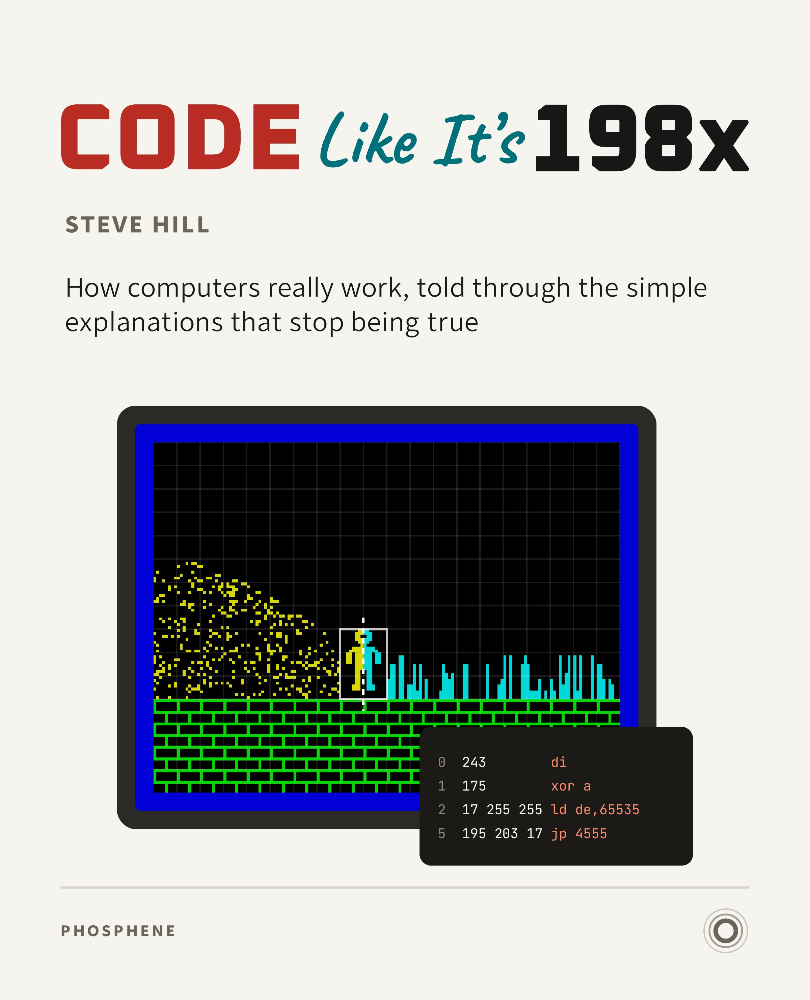

Code Like It’s 198x

How computers really work, told on one small machine from 1982, the ZX Spectrum, through the simple explanations every learner is given, and the moments each one stops being true.
You don’t need to know how to program. Every program in the book has been run, and every picture of a screen comes from the program running, so you can read the code and see exactly what it does.
The Preface, the Introduction and Part 1 are free to read here. Part 1 starts with the computer itself, and ends with the kind lie that BASIC tells you.
Start reading
Buy the PDF and ebook
Contents
Preface Introduction Part 1 What We Mean By “Code”Free to read
In the modern era, programming is full of abstractions and compromises that most of us no longer notice. That’s partly because modern computer systems are so complex that it’s impossible to keep all their details in your head at the same time.
For that reason, we won’t be talking about modern systems here. Instead, we’re going to focus on a single, small, highly constrained machine: the Sinclair ZX Spectrum.
The Spectrum was the computer I started out with in the 1980s. More importantly, it’s simple enough that there are very few layers of abstraction to worry about. When something goes wrong, it’s usually clear that something is wrong, even if the reason isn’t yet obvious.
The Spectrum was built to a price. When it was launched in 1982, the cheaper of its two models retailed for £125 – a price point that required tight control over production costs. Features weren’t added unless they were essential, and compromises weren’t hidden so much as accepted.
You won’t learn how to program in this section. You’ll learn how to interpret what happens when you do. These foundations are essential to everything that comes next.
1 The Smallest Honest Computer 2 What the Machine Actually Sees 3 BASIC: A Very Kind Lie The rest of the book The rest of the book carries on from where Part 1 ends, in the PDF and ebook editions .
Part 2 The Next Layer Down 4 Assembly Language is Another Story 5 Making Something Happen 6 Where the Picture Lives 7 Colour is a Compromise Part 3 When Models Stop Working 8 Speed Is Not What You Think It Is 9 The Screen Is Not Waiting For You 10 Memory Isn’t Where You Left It Part 4 What the Machine Is Actually Doing 11 What Runs When You Press RUN 12 Fifty Times a Second 13 Time Is a Shared Resource 14 Every Sound Costs Time 15 Why Tricks Work Part 5 Zooming Back Out 16 Humans Built This 17 The Same Machine, Somewhere Else 18 Why Games Look the Way They Do 19 What You Know Now Appendices A BASIC vs compiled BASIC vs Assembly B Hex, binary, voltage C Lies we told (on purpose) D Suggested next machines and why